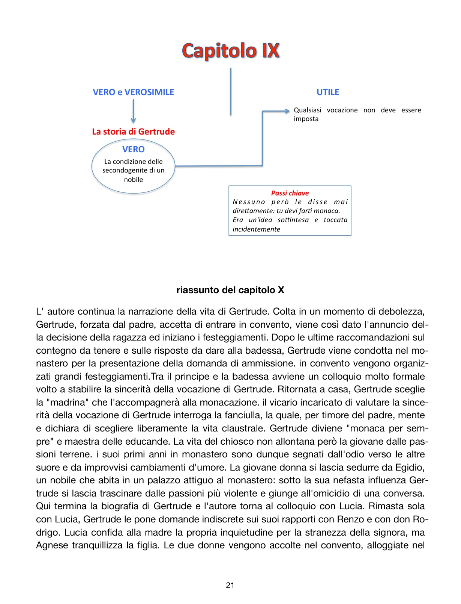
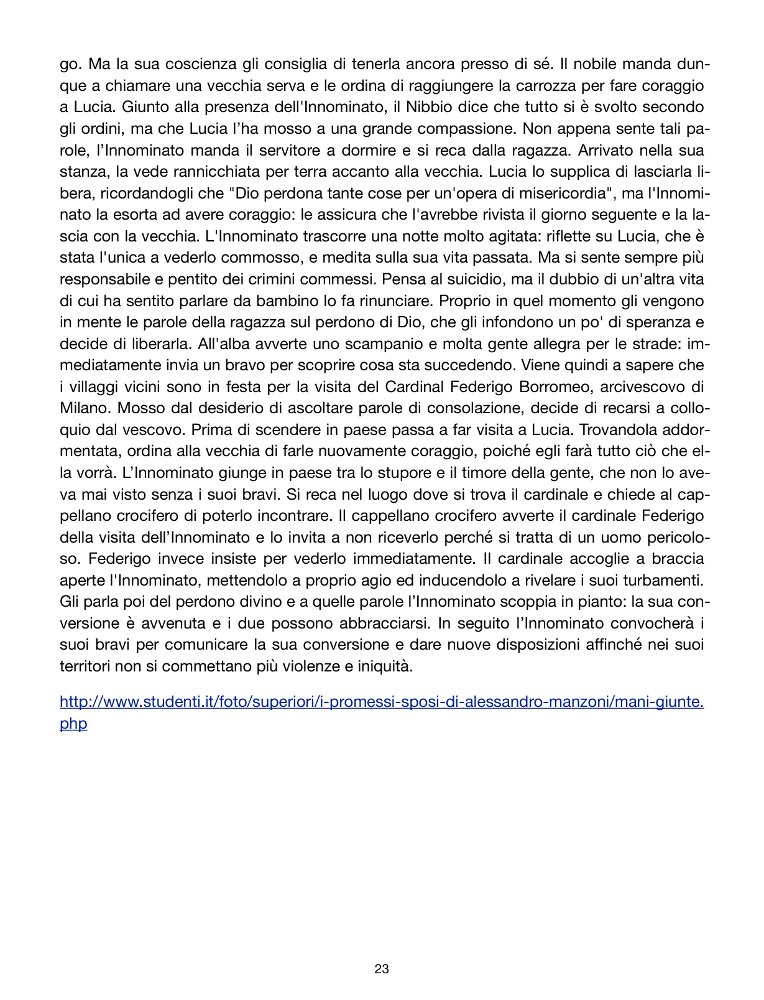

Due figure opposte e complementari: una vocazione forzata che precipita nella colpa, una potenza criminale che cede alla grazia.
Gertrude: una vocazione imposta
La monaca di Monza entra in scena come figura inquieta e ambigua. La sua storia è una critica feroce a un sistema familiare e sociale che decide il destino delle figlie in nome del patrimonio e del decoro. Gertrude, ultimogenita di una grande famiglia nobile, è educata fin da bambina a diventare monaca senza che nessuno glielo dica apertamente: tutto intorno a lei è allusione, pressione, premio, ricatto.
Quando prova a sottrarsi, trova solo gelo, colpa e violenza psicologica. La scelta religiosa non nasce da vocazione, ma da costrizione. Da qui la deformazione interiore che la porterà poi verso Egidio, il delitto e il tradimento.

Schema su Gertrude: secondogenite nobili, vocazione imposta, passioni proibite e caduta morale.
Lezione implicita
Manzoni colpisce duro: una vocazione imposta è una violenza. Qui non c’è solo il dramma individuale di Gertrude, ma una critica a un’intera civiltà nobiliare che usa i figli come pedine patrimoniali.
La conversione dell’Innominato
L’Innominato è l’altro grande snodo. Ha costruito la propria identità sulla trasgressione, sul dominio e sul terrore. Ma il rapimento di Lucia lo spezza. Per la prima volta sente il peso della morte, del giudizio, del vuoto. Lucia, con la frase sul perdono di Dio per un’opera di misericordia, apre una fessura nella sua corazza.
La notte è decisiva: non riesce più a reggere se stesso, pensa al suicidio, poi la memoria dell’infanzia e il desiderio di senso lo portano verso il cardinale Federigo Borromeo. L’incontro con il cardinale compie la svolta. L’Innominato piange, si converte, cambia il proprio territorio e decide che sotto il suo potere non si compiano più violenze.

Il PDF dedica un lungo riassunto alla notte dell’Innominato e all’incontro con Federigo Borromeo.